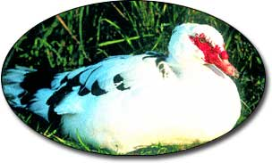
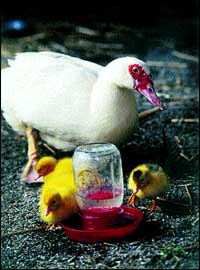
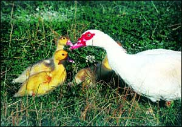

Issue #206 - October/November 2004
Fun, easy to care for and a great source of meat, Muscovy ducks also can help control flies and other pests on your homestead.
With its head dominated by brilliant red, fleshy outgrowths called caruncles, the male Muscovy probably wouldn’t win a beauty pageant for domestic ducks. But that doesn’t bother fans like Corine de Wit of Reva, Va., who began raising this unusual species of waterfowl in the 1970s, when she lived in what is now the Democratic Republic of Congo, Africa.
“Muscovies are perfect for the small farmer,” she says. “They multiply fast - a drake and five ducks can produce 100 birds a year for consumption - and Muscovies are super bug-killers, so they convert pesty protein into tasty protein. Plus they’re fun, friendly and more fun. I just love having these ducks around.”
The Muscovy found on farms today traces its ancestry back to the wild Muscovy, a perching duck indigenous to the tropical regions of Mexico, and Central and South America. All other domestic ducks - including the white Pekin and the comical Runner - are derived from mallard stock. According to some sources, the Incas of Peru domesticated Muscovies centuries ago, keeping them as pest-controlling pets and suppliers of feathers, eggs and meat. Conquistadors brought these ducks from Columbia to Spain during the 1500s, and from Europe, the birds eventually traveled to Africa, Asia, Australia and back to North America. Today, Muscovy ducks can be found hunting bugs in Asian rice paddies and on American farms, and they’re served up for dinner in villages and gourmet restaurants around the world.
Domestic Muscovies are large, well-muscled ducks. Females weigh about 8 pounds and drakes can reach 15 pounds. Extremely self-reliant, these birds will forage for tender grasses, and pond and dry-land weeds, and their healthy appetite for flies, mosquitoes, slugs, snails and even mice make them very handy to have on a homestead. Just be careful to protect young plants: Muscovies sometimes uproot flowers and vegetables in their zeal to locate worms and other soil-dwelling delicacies. They also love reaching up to pluck ripe blueberries and raspberries from bushes.
Muscovies have powerful legs, sharp claws, long tails and rounded wings to help them navigate around trees. If left unclipped, many females and juvenile males fly very well and enjoy roosting on lofty perches such as barn roofs. Given an appropriate diet, uncrowded conditions and protection from predators, they’re unlikely to fly off in search of greener pastures. The adult drakes, on the other hand, are basically grounded by their hefty size. They also have feisty temperaments that can sometimes lead them to pick fights with each other when territory or females are at a premium. Many plucky drakes will even try standing up to predators much larger than themselves.
For folks accustomed to the noisy quacking of a flock of Pekins or mallards, the vocalizations of the Muscovy may come as a pleasant surprise. Drakes emit a breathy whistle while the females normally make a soft squealing noise unless they’re frightened or angry. This can be an advantageous trait if you have close neighbors who don’t appreciate ducks as much as you do.
Brian Witt of Cassatt, S.C., secretary/treasurer of the International Muscovy Breeders Association, was drawn to the breed in part by their size and soft calls. He and his wife, Wanda, keep several hundred Muscovies for showing and selective breeding, and they sell many for the table.
“I like big ducks - the bigger the better,” he says. “Muscovies also are quiet and not as messy as other duck breeds, and they’re the best mothers for setting. They also take care of themselves and don’t need much human intervention.”
Although these waterfowl relish swimming when given the opportunity, they tend to be more terrestrial than other domestic ducks and their feathers seem to have less waterproofing. As a consequence, a pond isn’t necessary for Muscovies and can even pose a hazard during icy winters, when these ducks of tropical origin may become chilled or suffer frostbite.
When considering whether to add Muscovies to your poultry menagerie, keep in mind that, like most waterfowl, they are messy. Ducks produce copious soft, smelly droppings (which do a great job of fertilizing the grass or garden) and they scatter feathers far and wide during molting periods. Also, the Muscovy’s large size, strong wings and sharp claws can make capturing and holding the birds a challenge. Duck-catchers should wear heavy gloves and a long-sleeved jacket for protection, and always hold the bird’s beak away from the face. To avoid injuring your ducks, never catch them by the legs.
Duck eggs can be used in cooking just like chicken eggs; they have a somewhat firmer texture when cooked (making them ideal for angel food cakes) and a slightly higher cholesterol content.
Although Muscovies don’t produce as many eggs or ducklings as most mallard derivatives, their meat fetches more per pound and is leaner due to the species’ terrestrial nature. “People are often rather dismayed that I would eat my Muscovies, since I enjoy watching them so much,” de Wit says. “My answer to them is that I have provided my animals with the happiest possible duck life. I slaughter them humanely and when all is said and done, I know that the Muscovies I’m consuming are far better off than any commercially produced chicken, duck or turkey, most of which are raised under inhumane conditions.”
Basic Muscovy Care
Enthusiasts value this species for its self-reliance, but Muscovies do need proper daily care to thrive and reproduce. Many duck raisers purchase a balanced commercial diet formulated for waterfowl or poultry; others create their own concentrated feed from various grains. The Witts do both: They mix their own feed from grains and sunflower seeds, and serve unmedicated layer pellets to their adult ducks at laying time. “Medicated feeds aren’t necessary for ducks and can cause health problems,” Brian Witt says.
Such a basic diet as the Witts use can be supplemented with vegetables, fruit and other table scraps, however, never feed moldy food items, a practice that can cause your birds - particularly ducklings - to develop the lung disease aspergillosis. Ducks also need access to grit or coarse sand to help them digest their food, and they must have fresh, clean drinking water each day, in containers deep enough to allow them to submerge and clean their nostrils, but not so deep that they can swim in the container.
Ducklings that are hand-fed often become tame and friendly.
If you do not have a pond, consider providing a child’s plastic wading pool for your ducks during the warmer months. Set up some way for them to get in and out of the pool, such as several large rocks or a concrete block step, and be sure to change the pool water regularly to prevent stagnant, unsanitary conditions.
Muscovies are strong, hardy waterfowl that don’t require elaborate housing like chickens, but they do need protection from freezing or extremely wet weather, and from predators such as coyotes, foxes and owls. If your ducks roam free during the day, luring them into an enclosed shed, covered pen or other animal-proof enclosure at night will go a long way toward preventing losses from predation. In colder climates, a well-bedded shelter will also help protect these ducks from frostbite.
“I leave my ducks unclipped, so they can at least have a chance of getting away from dogs and foxes,” de Wit says. “At dusk, we lead them into a pen with a 5-foot wire-mesh fence around it.” She considers roaming dogs to be Muscovy enemy No. 1.
When kept under clean (for a duck), uncrowded conditions, and given a proper diet, Muscovies are very resistant to parasites and infectious diseases. Vaccinations usually aren’t necessary in a small flock, but you may want to ask a local veterinarian experienced in avian medicine for his or her recommendations, especially if certain diseases are prevalent in your area. Routinely, watch your ducks for signs of sickness such as fluffed feathers, lethargy or poor appetite, and promptly separate sick birds for treatment. Any newcomers brought in from other farms should be quarantined for a month before joining your permanent flock.
Make Way for Ducklings
What could be cuter than a fuzzy flock of peeping ducklings? If you’re just starting out, you can purchase ducklings from local breeders, feed stores, hatcheries or animal auctions. Avoid buying a commercial strain of Muscovies that has been bred exclusively for meat production; the birds may have lost their self-reliant traits.
Muscovy females mature at about five months and will lay up to three clutches a year. They are known for being good brooders and protective mothers, so many raisers let their ducks do the setting rather than artificially incubating the eggs. De Wit, who keeps about 50 Muscovies, says Mrs. Duck does such a good job, it’s just not worth the trouble to pull her eggs.
After hatchings occur, however, you should make sure the babies have extra protection from a host of predators that include crows, weasels, dogs and even Muscovy drakes. “As soon as a mom is spotted with ‘yellows,’ we catch them all up (she follows), and put them in a duckling pen that’s placed within the night pen,” de Wit says. “This is a 3-by-6-by-2-foot-tall cage with small chicken wire on the sides and top, and a hinged lid. The mother enjoys protection from drakes and family squabbles, but still has company. The young family stays in there four to six weeks - until they don’t fit anymore - and then they’re set loose. Mortality is greatly reduced this way.”
The Witts also let the female Muscovies incubate their eggs - until just prior to hatching, when they move the eggs to protect the ducklings from being killed by fire ants, a common pest in the South. The ducklings stay in brooders until they’re 1 month old; then they go into outdoor pens protected by electric fencing.
M uscovies are super bug killers, efficiently converting pesty protein into tasty protein.
Whether the ducklings are reared by their mothers or in brooder boxes, they’ll need fresh, clean drinking water in a shallow container - a chicken waterer is ideal - so they don’t drown. Also, water pans shouldn’t be so large that the female can climb in with her brood and accidentally crush or drown them.
Young ducklings do well on moistened, unmedicated chick-starter crumbles or crushed waterfowl pellets, and finely cut fresh grass, dark green lettuce or chard. A mesh bag filled with leftover fruit and hung out of reach will attract small flies for the young to feed on and, if you have a worm bin, you can toss some worms to the birds as a special treat. Ducklings frequently hand-fed a small amount of bread or other tasty tidbit become tame and friendly.
Because young Muscovy ducklings are so susceptible to chilling, if they’re in a brooder box, it must be kept at 85 to 90 degrees the first week. Then the temperature can be lowered gradually, by 5-degree intervals, during the following weeks. Check the temperature with a brooder thermometer and watch the ducklings for signs that they might be too cold (huddling) or too hot (panting, avoiding the light). The bedding, which could be clean, absorbent wood shavings or straw, should be free of mold and changed frequently.
Never rear a duckling alone, de Wit advises, citing her African-born foundation drake, Couak, who grew up without other ducks. “He imprinted on me,” she says. “Never having to interact with his species while growing up, he was incapable of doing so as an adult. He became vicious and bad-tempered, attacking everyone in my family constantly.”
If you want to raise ducks who will become attached to you, try getting three or four to rear together, de Wit suggests. The ducklings will grow up imprinted on you and others of their own kind, plus they’ll keep each other company when you’re not home.
Before you know it, you’ll be treated to one of the most satisfying of rural scenes: a little flock of tail-wagging Muscovies rooting through the emerald grass for bugs, perhaps with a glistening string of slug slime dripping from their crimson beaks. Now that is a lovely sight.
Cherie Langlois is a freelance writer who enjoys raising Muscovy ducks and watching their antics on her Washington state farm.
Broody Muscovies
Choosing a secluded spot, a female Muscovy usually makes a simple hollow in the straw or dirt for a nest, and lines it with her own soft down. (If available, she’ll use a box or another cavity). She’ll lay a clutch of up to 20 large, creamy eggs and incubate them for approximately 35 days, only leaving the nest briefly to eat and drink. When her downy ducklings hatch, the duck gathers them under her wings and breast to keep them warm and safe while they’re sleeping. She leads them on forays to search for small insects and new grass, and she’ll bravely try to protect them from perceived predators - including you. Because female Muscovies make such marvelous setters and diligent mothers, they’re used to hatch-out other species of waterfowl and poultry. They’ll even set on geese and swan eggs!
|
 Cherie Langlois The American Poultry Association recognizes four colors of the Muscovy - white, black, blue and chocolate. Muscovy breeders, however, have created more than two dozen additional color and pattern varieties. |
 Cherie Langlois The Muscovy, our only domestic duck breed unrelated to mallards, is an excellent setter and protective mother. |
 Cherie Langlois |